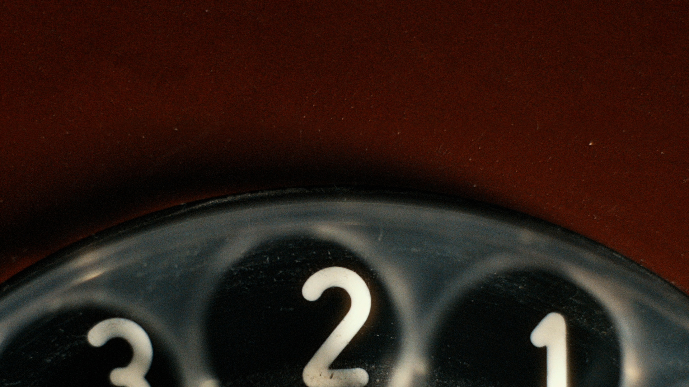
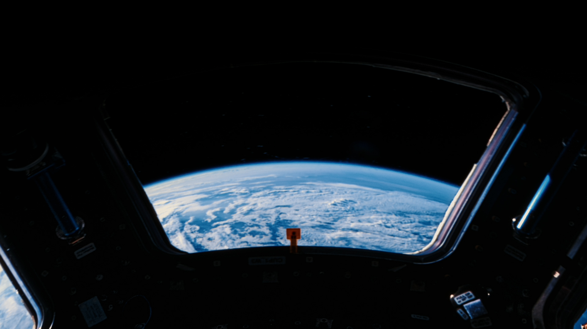

To launch their new low-cost model; Sonnet 5.5, we created a simple yet beautiful film building on their successful horizon’s graphic treatment.
The film was made entirely from found footage using a highly talented team of editors, motion designers, researchers and visual effects artists.
As the lead post-producer, I managed all aspects of the production including creative reviews, internal / external feedback, offline & online workflows and delivery.


Agency: Mother
Creatives: Harry Robson & Gabriel Paul
Creative Director: Adam Newby
CCO: Felix Richter
Editor: Myles McAuliffe, Emily Robb, Cassy Vincent, Reuben Fagan
Agency Producer: Clio McLeary, Siobhan Spencer-Edwards, Erin Wright
Post-Production Agency: Mother-Made
EP: Amber Atherton
Grade: Felipe & Vanessa @ Colour By Fawn
Sound: James Everett
VFX: Jakob Thorhallsson
Post-Producer: Richard Bailey
Account Team: Emily Lupton & Cat Poon
Composition: Mr Pape